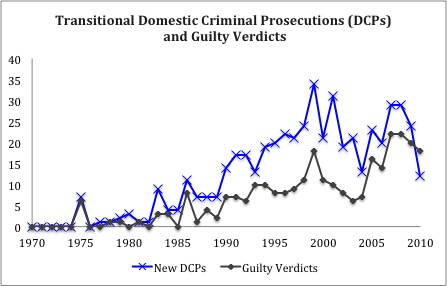
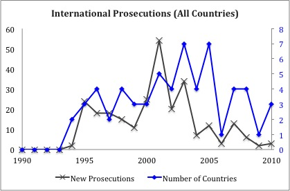
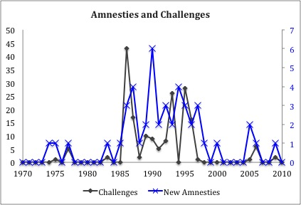
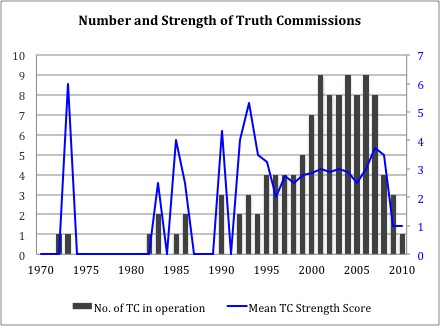
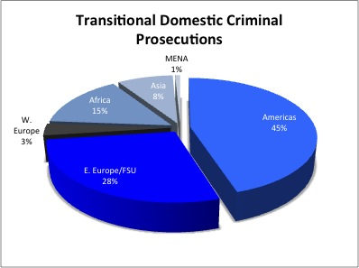
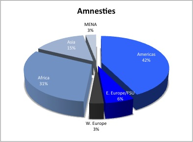
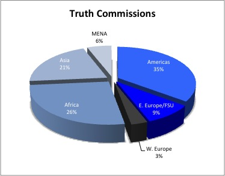

Home
This website is meant for scholars and practitioners who wish to examine the causes and impacts of mechanisms that address human rights violations. It was founded to present the work of the Transitional Justice Research Collaborative (TJRC), which ceased operating in 2018.
Members of the TJRC project, Geoff Dancy and Kathryn Sikkink, will soon go live with a new database called the Transitional Justice Evaluation Tools (TJET). TJET will present extensive data updates on transitional justice mechanisms through 2020.
Comprised of principal researchers from University of Oxford, University of Minnesota and Harvard University, TJRC presented data on three primary transitional justice mechanisms—human rights prosecutions, truth commissions, and amnesties—for 109 democratic transitions in 86 countries around the world, from 1970-2012. While by no means complete, the dataset includes the most comprehensive single collection of information on these mechanisms for countries around the world. With the support of the National Science Foundation and the Arts and Humanities Research Council, the data were collected from a variety of sources by more than 25 coders over a three-year period. As we complete our data collection and data processing activities, additional data will be made publicly available including new data on human rights prosecutions, vetting and reparations. Read more details about this project.
Feedback and Corrections
The Collaborative welcomes and encourages Feedback from country experts. With such feedback, we hope to continue to improve the currently available data. We will review your comments, research them, verify them, and make emendations if necessary.
Time Trends




Regional Patterns



This material is based upon work supported by the National Science Foundation (Grant Nos. SES-0961226 and SES-1228519) and the Arts and Humanities Research Council (Grant Nos. AH/1500030/1 and AH/K502856/1). The Oak Foundation (Grant No. OCAY-11-143) supported “The Access to Justice Project: Overcoming Amnesty in the Age of Accountability.” The John Fell Oxford University Press Research Fund (Grant No. 101/552) funded “Accounting for Amnesty: Justice for Past Atrocity.”
Any opinions, findings, and conclusions or recommendations expressed in this material are those of the authors and do not necessarily reflect the views of their Universities or those of the National Science Foundation or the Arts and Humanities Research Council, or the Oak Foundation.


This website was recreated by Oskar Timo Thoms on behalf of TJET/TJRC and built with Quarto and the reactable package.